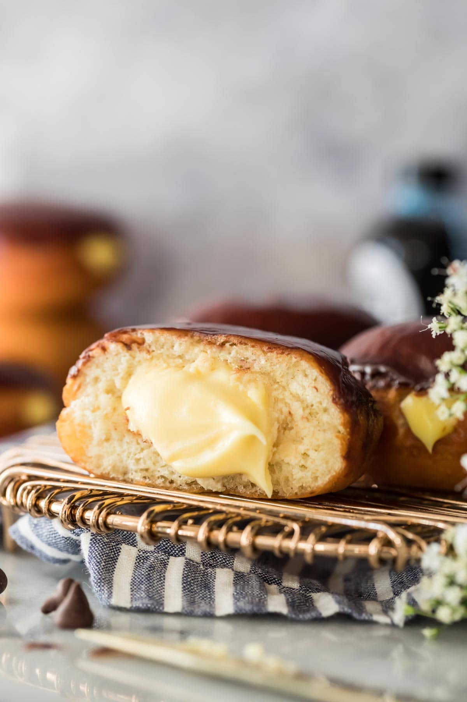

Boston Creme Doughnuts

Skip the trip to the corner coffee shop and make these Boston cream donuts from scratch!
Yields: 9 doughnuts
Ingredients:
- 3 1/2 cups all-purpose flour
- 2 1/4 teaspoons instant/rapid rise yeast
- 1/3 cup granulated sugar
- 1 teaspoon table salt
- 2/3 cup of whole milk
- 6 tablespoons unsalted butter, melted
- 2 large eggs, lightly beaten
- 3/4 teaspoon vanilla extract
- vegetable oil
Glaze:
- 3 oz chopped chocolate
- 1/2 cup of heavy cream
Cream Filling:
- 1 cup whole milk
- 1 cup heavy cream
- 5 large egg yolks (discard or use for another recipe!)
- 2/3 cup granulated sugar
- 1/4 teaspoon table salt
- 3 tablespoons of table salt
- 4 tablespoons unsalted butter
- 1 1/2 teaspoons of vanilla extract
Directions: Creme filling
- We will need to make the cream filling in advance, as it will take several hours to cool off.
- In a large bowl or large measuring cup, whisk together milk, cream, and egg yolks until the egg yolks are well-broken up and the mixture is thoroughly combined.
- In a medium-sized saucepan, combine sugar, salt, and cornstarch and whisk together.
- While still whisking, slowly drizzle egg yolk mixture into the saucepan. Go slowly so you have time to evenly incorporate the ingredients and eliminate any lumps that might otherwise form.
- Turn stovetop heat to medium and whisk constantly until it begins to thicken to a pudding-like consistency. How long this takes depends on your particular saucepan and stovetop, but you can tell it's done when the whisk leaves trails through the mixture and it coats the back of a spoon.
- Remove from heat and pour immediately through a fine mesh strainer into a large, heatproof bowl.
- Add butter, one tablespoon at a time, whisking until completely melted after each addition.
- Stir in vanilla extract. Mixture should be smooth and completely combined.
- Allow pastry cream to cool at room temperature for 15-20 minutes, stirring occasionally to prevent a skin from forming, then place a piece of wax paper or plastic wrap directly against the surface of the pastry cream (to prevent a skin from forming as it chills).
- Transfer to refrigerator and allow to chill for several hours or up to 3 days before using.
Directions:The Doughnuts
- In a large bowl (or the bowl of a stand mixer), combine 2 cups (250g) of flour, yeast, sugar and salt and stir to combine.
- Heat milk in the microwave in a microwave-safe dish until it’s reached a temperature between 110-115F (43-46C). Pour into flour mixture and stir until completely combined.
- Add melted butter, eggs, and vanilla extract and stir until completely combined.
- Gradually stir in remaining flour (you can do this with a wooden spoon or spatula or the dough hook attachment of a stand mixer) until your dough is clinging to itself and is slightly sticky/tacky to the touch, but not so sticky that it’s sticking to the sides of the bowl or your fingers. You may need more or less flour than is called for in the ingredients list and should judge based off of the texture of the dough.
- Stir until dough is cohesive and smooth. Dough should not be dry; slightly tacky dough is ideal for soft donuts.
- Transfer dough to a lightly oiled bowl and cover tightly with plastic wrap. Place in a warm, draft-free space and allow to rise until doubled in size (about 30-60 minutes).
- Once dough has doubled in size, turn out onto a clean, lightly floured surface and roll or pat dough to be ¾” (2cm) thick. Use a biscuit cutter to cut out donuts and transfer to a parchment paper lined baking sheet, spacing donuts at least 1” (2.5cm) apart. Cover with a towel or plastic wrap and allow to rise until puffy and nearly doubled in size (about 30 minutes). While donuts are rising, you can begin to heat your oil.
- Fill a medium-sized heavy-bottomed saucepan about 2-3” (5-8cm) deep with vegetable oil and fit a candy thermometer to the side (make sure the thermometer is suspended about halfway in the oil and is not touching the bottom of the pan). Turn stovetop heat to medium. Heat oil until you have a steady, consistent temperature of 350F (175C).
- Fry donuts one at a time, carefully lowering them into the oil (I use a spider) and frying on each side until light golden brown on each side. Allow oil to return to proper temperature between donuts.
- Remove donut from oil to a cooling rack or a paper towel lined plate. Allow to cool for several minutes before filling.
Directions: Filling & Glazing
- Fit a piping bag with a small round tip (I use a Wilton 12 tip) and fill with prepared pastry cream.
- Pierce each donut halfway through with a sharp knife then insert the piping tip halfway into the donut and squeeze pastry cream to fill the donut. Repeat with remaining donuts.
- Prepare glaze by combining heavy cream and chopped chocolate in a microwave-safe dish and heating in 20-second increments (stirring in between) until chocolate is melted. Dunk the top of each donut in glaze then allow to cool on cooling rack.
- Donuts are always best served fresh!
Return Home